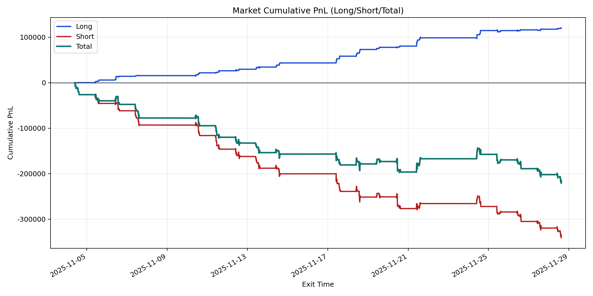
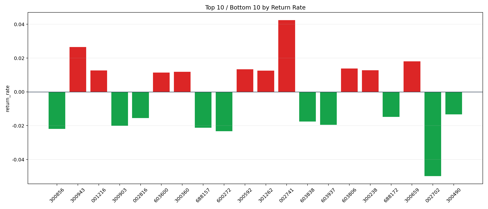

| repo_root | /home/haoranyou/data/output/alpha0.4_1w_5s_3ticks |
|---|---|
| period_months | 1 |
| period_label | 2025-11-04_to_2025-11-28 |
| start_time | 2025-11-04 09:50:17 |
| end_time | 2025-11-28 15:00:00 |
| n_trades | 53702 |
| n_symbols | 1475 |
| total_pnl | -220625.5633499999 |
| long_total_pnl | 120320.05535000002 |
| short_total_pnl | -340945.61869999993 |
| total_entry_notional | 506907232.0 |
| long_entry_notional | 59664550.0 |
| short_entry_notional | 447242682.0 |
| total_return_rate | -0.0004352385395637833 |
| long_return_rate | 0.0020166087794175943 |
| short_return_rate | -0.0007623279986949008 |
| top_symbols_by_return | ["002741", "300943", "300659", "603806", "300592", "300238", "001216", "301262", "300360", "603600"] |
| bottom_symbols_by_return | ["002702", "600272", "300856", "688157", "300903", "603937", "603838", "002816", "688172", "300490"] |

